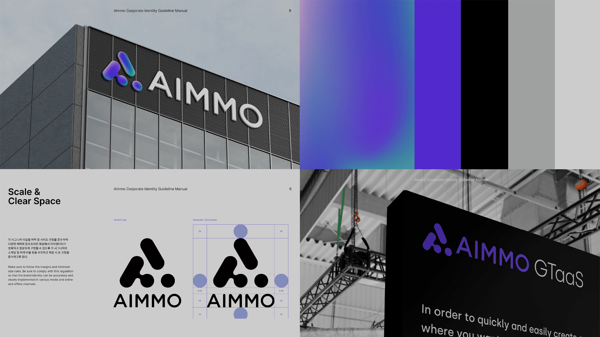
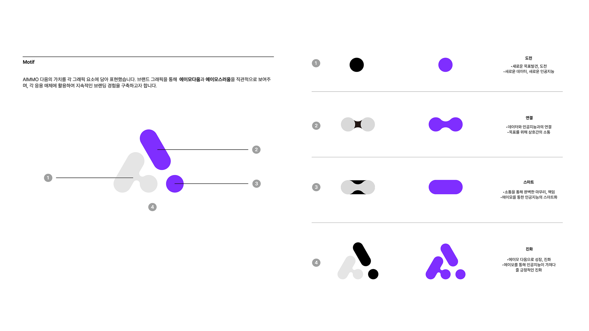
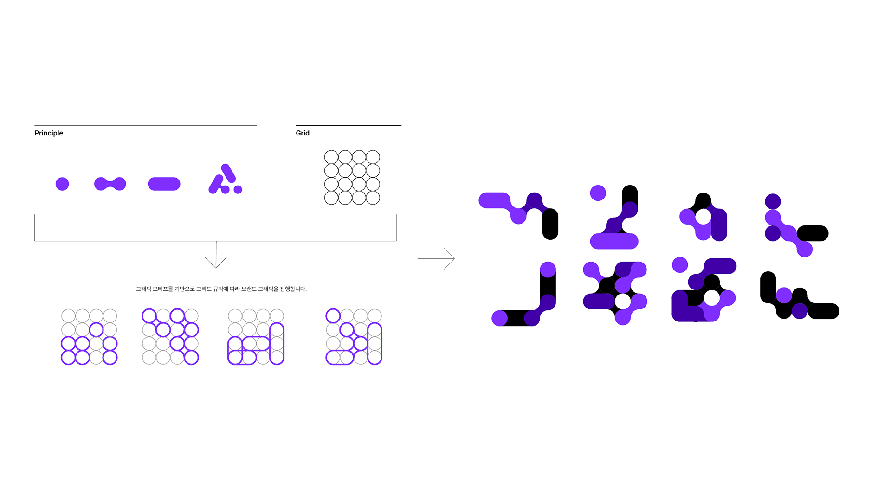
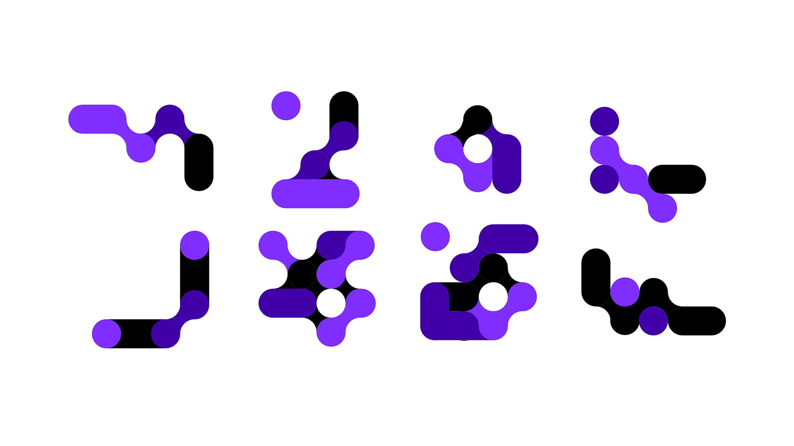
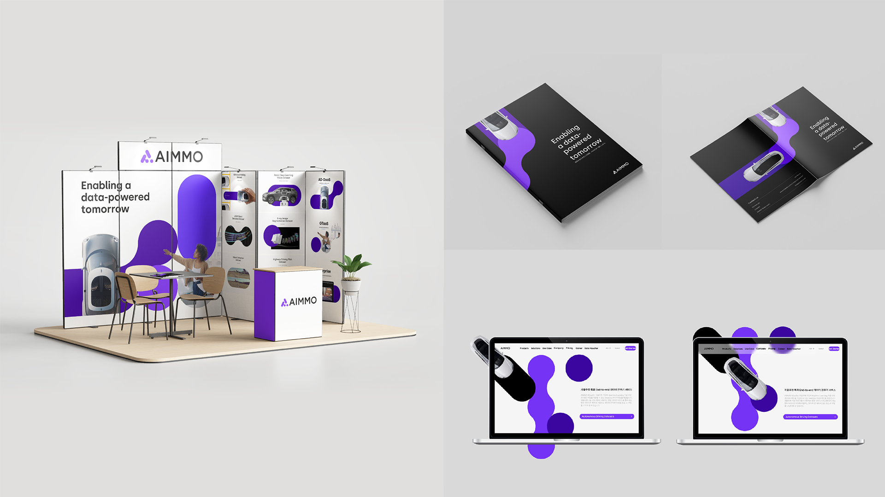
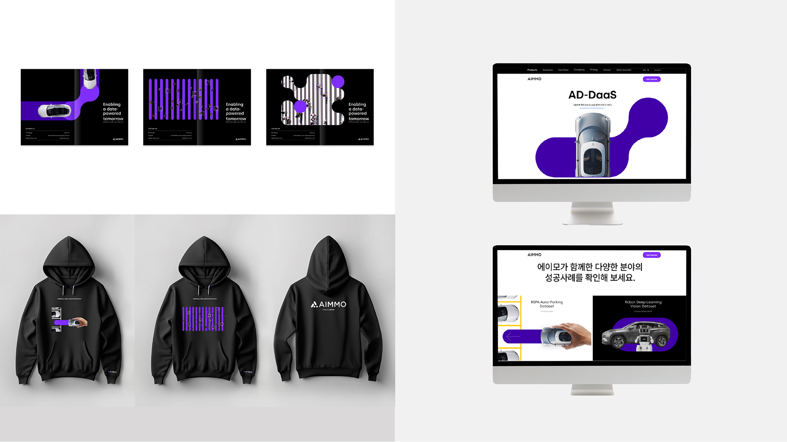

브랜드 자산은
이미 있었습니다.
로고와 기본 그래픽 모티브는 정의되어 있었습니다.
기존 브랜드 자산을 모듈형 그래픽 모티브로 확장해 제품·웹·전시·인터널 브랜딩까지 같은 인상으로 이어지게 했습니다.
로고와 기본 그래픽 모티브는 정의되어 있었습니다.
어디에 어떻게 적용할지 기준이 부족했습니다.
제품·전시·홍보물에서 각자 다르게 사용했습니다.
같은 브랜드가 접점마다 다른 모습으로 보였습니다.
AI 데이터 기술
접점마다 다른 인상
제품 강점 전달 약화
가치가 브랜드로 남지 않음

‘전문성을 바탕으로 데이터 전주기를 연결하고,
글로벌 확장을 지향하는 B2B AI 플랫폼.’





해외 전시와 계약 현장에서 제품 설명보다 먼저 브랜드 변화에 대한 반응이 나올 정도로 호응이 컸고, 브랜드를 대하는 태도와 기대 수준도 분명히 달라졌습니다.
가격만으로 비교되던 AI 데이터 시장에서 브랜드 인지도가 높아지며 기술·경험·브랜드를 함께 평가받는 경쟁 우위를 만들었습니다.
CES 등 해외 행사에서 부스 방문과 상담 참여 인원이 이전보다 크게 늘어 현장에서 달라진 관심도를 직접 확인했습니다.
‘기존 리브랜딩 자산을 지키면서도
제품·웹·공간·사내 경험이
같은 원리로 확장되는
브랜드 시스템으로 발전시켰습니다.’
매번 새로 만들 순 없습니다. 그래서 리뉴얼보다 중요한 것은 기존 자산을 어떻게 활용하여 계속 작동하게 만드느냐가 중요합니다. 분석과 재창조를 통해 원리를 만들고 이를 변화 가능한 규칙으로 바꾸면 브랜드가 전달하는 메세지는 하나의 언어로 연결될 수 있다는 것을 배운 의미있는 작업이였습니다.